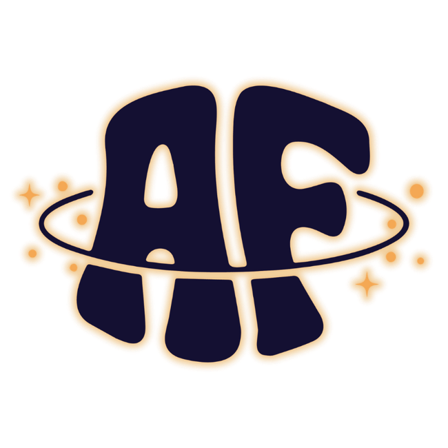
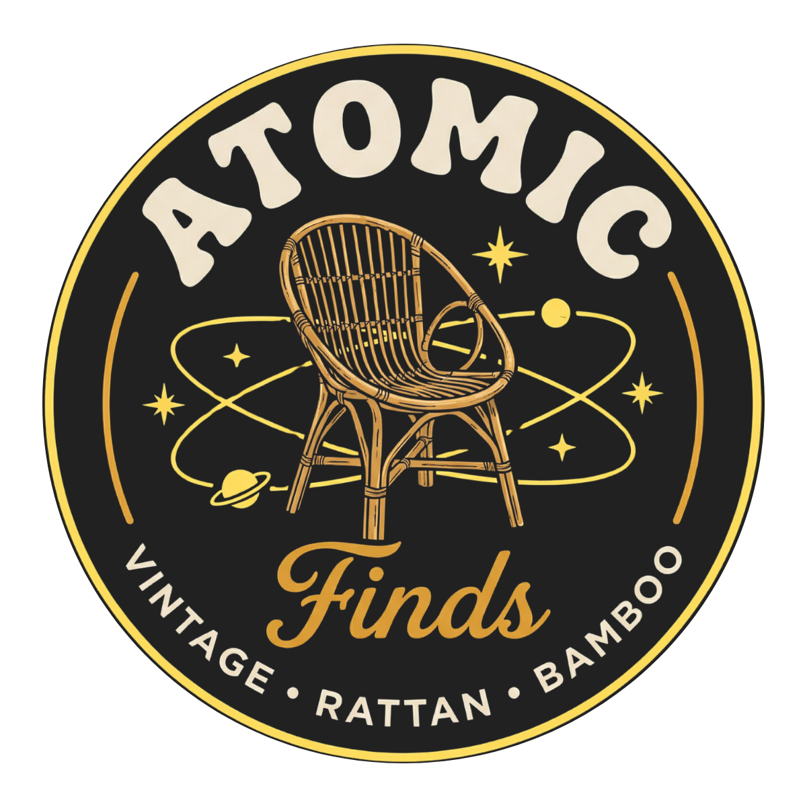
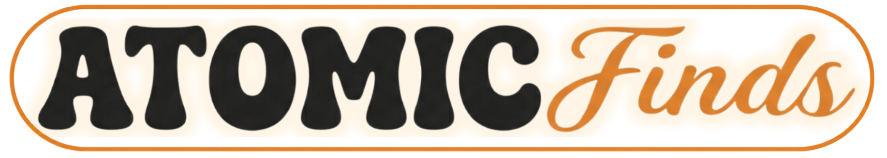

primary-navigation-home-logo
logo-dark-bg

logo-light-bg
logo-monogram-light-bg

logo-pill-badge



primary-navigation-home-logo.png is the mark for the site nav/header — always on dark. Use logo-dark-bg / logo-light-bg for the equivalent full lockup on their respective surfaces, and the monogram only where space is tight (favicon, app icon, social avatar). The catchphrase lockup pairs the mark with "Restored. Vintage. Rattan. Bamboo." — use in footers, packaging, or a hero close.